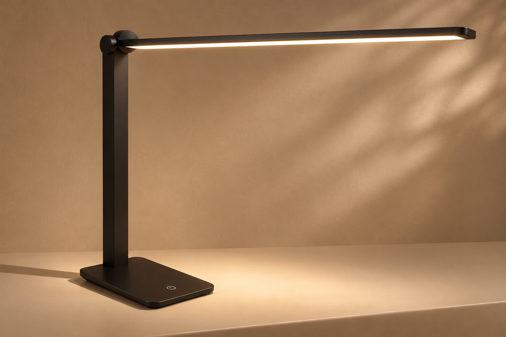

A distinct touch
The touch-sensitive control sends one event. Holding a finger should not repeatedly advance the cycle.
EVERYDAY OBJECTS, EXPLAINED · 01
A familiar desk lamp becomes a small lesson in computation. Explore how a single touch turns a simple rule into light.
Try the lamp ↗3 brightness levels / 1 off state / 1 input

01 / EXPERIMENT
Start at off. Each touch advances one state.
The fourth touch brings you back to the beginning.
Touch the power symbol
Keyboard: Tab to the control, then Enter or Space
The lamp is off. Touch the control to begin.
Each arrow represents one touch. After high, return to off. The glow is illustrative, not a measurement; this demo does not control the physical lamp.
02 / THE COMPUTATIONAL MODEL
A finite-state machine remembers the current state.
An input triggers a transition and changes the output.
The touch-sensitive control sends one event. Holding a finger should not repeatedly advance the cycle.
The lamp remembers off, low, medium or high. These states become the integers 0, 1, 2 and 3.
State 0 means no light. States 1–3 produce increasing brightness. After high, the lamp turns off.
| Name | Type | Meaning | Initial value |
|---|---|---|---|
level | Number | Current state: 0 = off, 1 = low, 2 = medium, 3 = high | 0 |
modes | Array of strings | Mode names, indexed by level | ["Off", "Low", "Medium", "High"] |
touchCount | Number | Touches since reset; for observation only | 0 |
isOn | Boolean (derived) | Whether level is greater than 0 | false |
03 / FROM BEHAVIOR TO CODE
HTML provides structure. CSS draws the lamp.
JavaScript remembers the state and updates the interface.
const modes = ["Off", "Low", "Medium", "High"];
let level = 0;
let touchCount = 0;
function touchControl() {
level = (level + 1) % modes.length;
touchCount += 1;
const isOn = level > 0;
return {
level,
mode: modes[level],
isOn,
touchCount
};
}
// Connect the HTML control to the model:
touch.addEventListener("click", () => {
touchControl();
render(); // Update the text and CSS.
});let declares values that can change. const keeps the modes array reference fixed. Array positions start at zero.
% is JavaScript’s remainder operator. For these nonnegative integers, adding one and taking the remainder after division by four gives the next state.
level > 0 yields true when the lamp is on. Calculating it from level keeps the two values consistent.
The demo uses a native HTML button. A click event supports touch, mouse and keyboard activation. JavaScript sets the scene’s data-level attribute; CSS responds by changing the glow. Programming a physical lamp would require hardware-specific touch detection and light-output code.
<button id="touch">⏻</button>
/* CSS reads the current visual state. */
.scene[data-level="3"] { --glow: 1; }
// JavaScript updates that state in render().
document.getElementById("scene").dataset.level = level;Read the complete source: JavaScript ↓CSS ↓HTML ↓